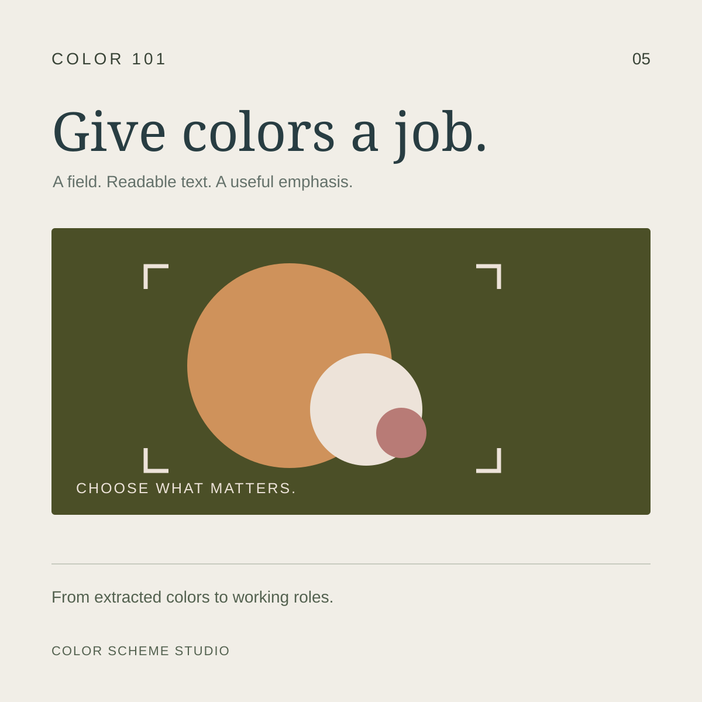
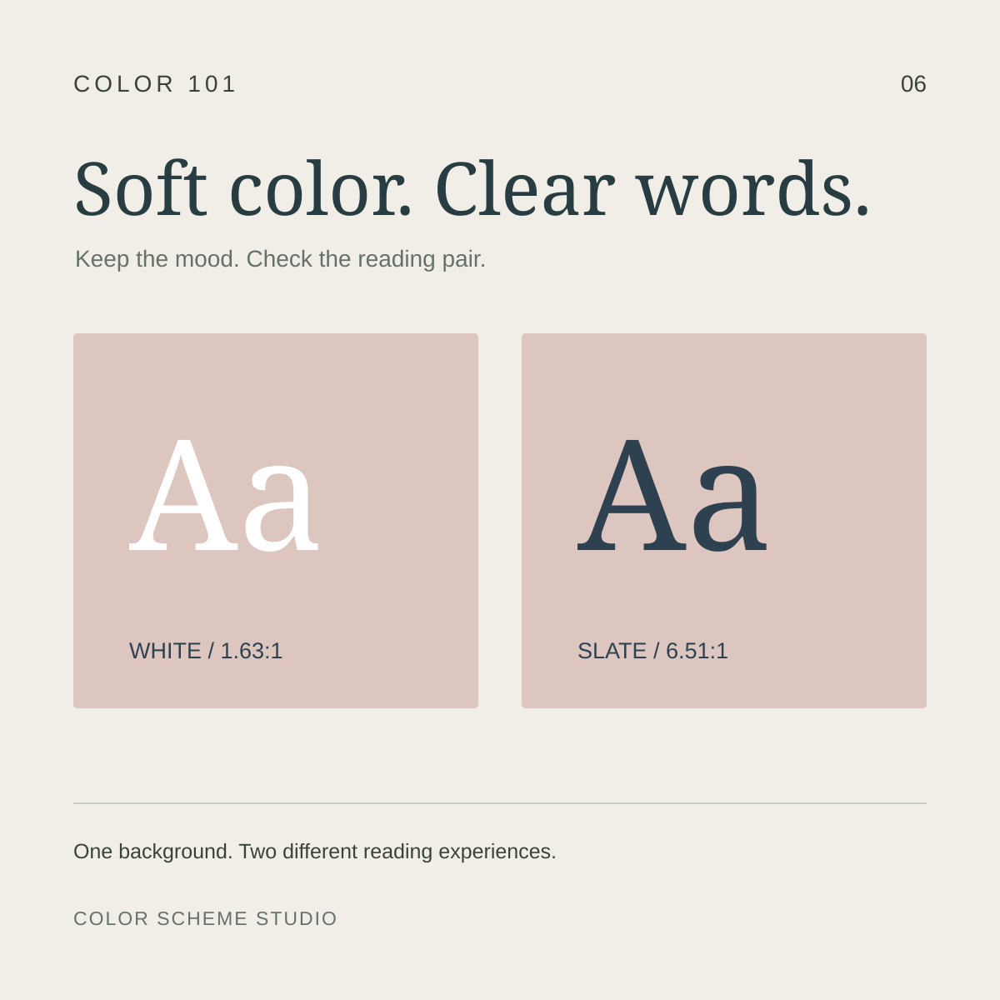
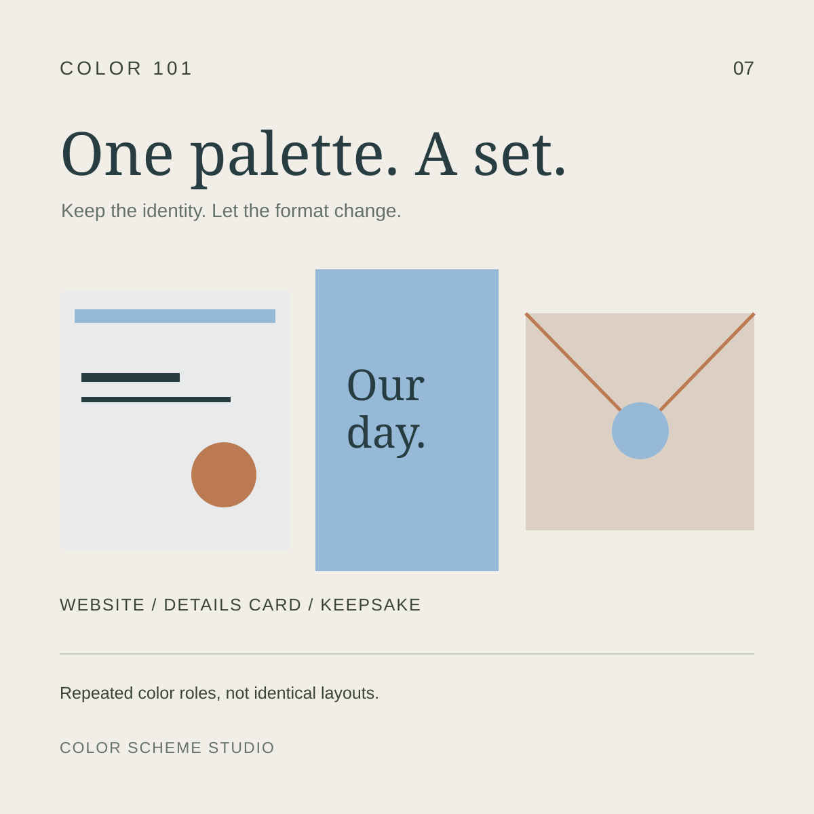
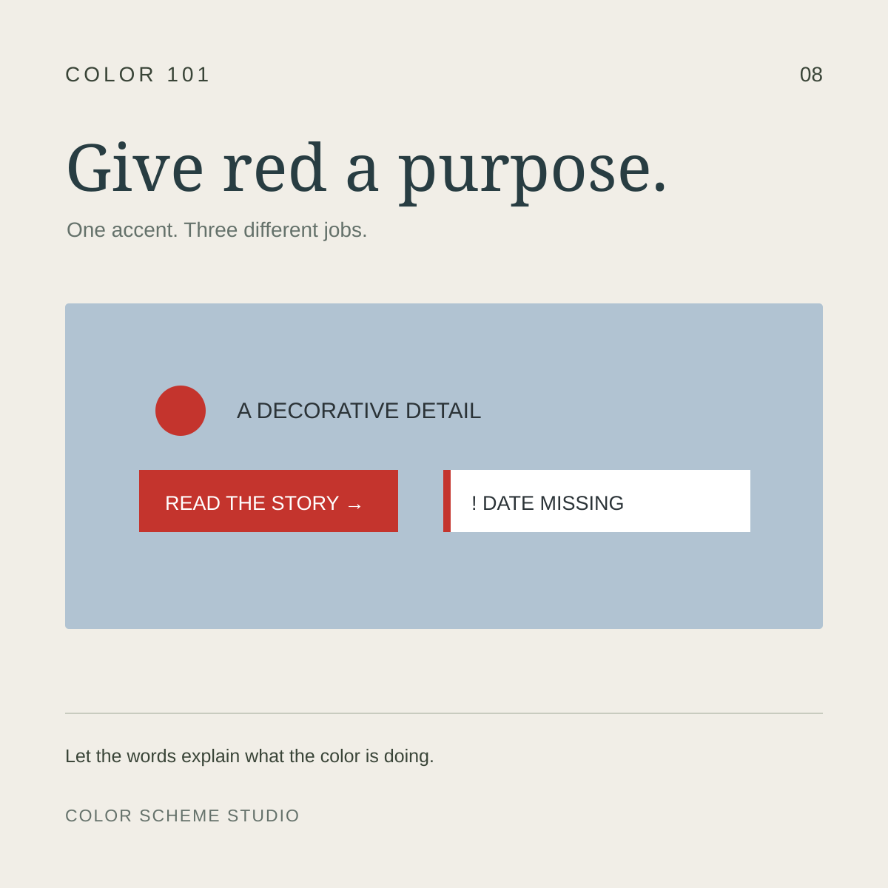
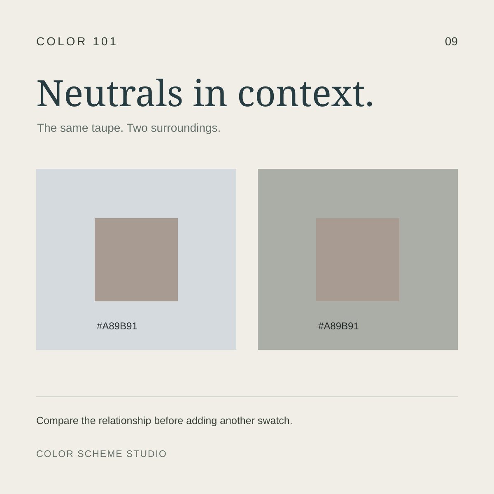

Color 101 · Practical color guides
Understand the colors you choose.
Simple explanations, useful examples, and small tools for your next design.

01 / Color fundamentals
HEX vs RGB vs CMYK: differences and when to use each
One color, different ways to describe it. Learn which values belong in your digital and print workflow.
Read the guide →
02 / Color in practice
How to balance a five-color palette
Five equal swatches do not need five equal jobs. Turn a palette into a composition with a clear focal point.
Read the guide →
03 / Color relationships
How to combine warm and cool colors
Learn how to combine warm and cool colors using a winter blue palette. Compare three layouts, place warm accents, and check text contrast separately.
Read the guide →
04 / Light and contrast
How to use bright accents on dark backgrounds
Learn how to use bright accents on dark backgrounds. Compare gold, copper, and plum color pairs with an interactive contrast checker and practical examples.
Read the guide →
05 / From photo to palette
How to choose a color palette from a photo
Learn how to choose a color palette from a photo by subject, setting, and detail. Compare three color-led layouts and refine automatic color suggestions.
Read the guide →
06 / Soft color, clear text
How to keep muted color palettes readable
Keep muted color palettes readable with tested text and background pairs. Compare blush and lavender examples and learn where to add a supporting dark ink.
Read the guide →
07 / One palette, several formats
How to create a wedding color palette across digital and print
Build a wedding color palette for a website, details card, and keepsake. Give blue and warm neutrals clear roles, check text, and plan a print proof.
Read the guide →
08 / Accent and meaning
How to use a red accent color with a clear purpose
Use a red accent color for decoration, a primary action, or a status message. Compare three examples and keep meaning clear with words, shapes, and contrast.
Read the guide →
09 / Neutral relationships
How to combine warm and cool neutrals
Combine warm and cool neutrals with clear surface roles. Compare one taupe swatch in two settings, choose reading ink, and build a consistent neutral palette.
Read the guide →